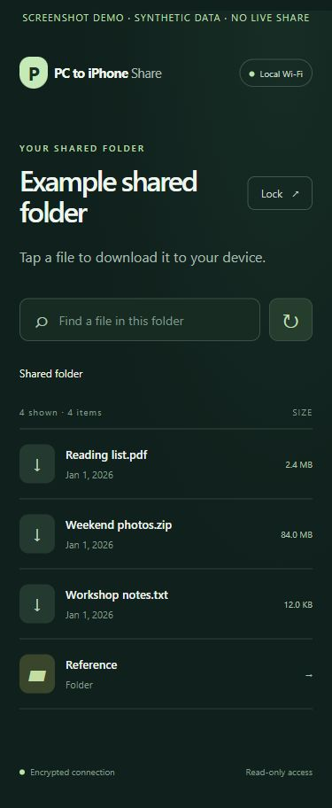

Skip the upload.
Your computer sends files directly to your receiving device over the selected local network.
LOCAL FILE SHARING, WITH LESS FRICTION
Download a computer folder on your phone, without sending it through the cloud. Choose what to share. Protect it with a password. Keep the connection encrypted.
Download for your computer ↗Windows · macOS · Linux hosts
iPhone · iPad · Android browser clients

Your computer sends files directly to your receiving device over the selected local network.
No account, phone app, or cable. Pair the local certificate once, then sign in and download.
Read-only access, a generated password, expiring sessions, and a stop control put the scope in your hands.
A CLEAR START
Choose the build for your desktop OS and processor. No Node, Python, or Go runtime is required.
The app listens on one private IPv4 interface. No automatic firewall or router changes.
Use the local dashboard to verify the address and certificate fingerprint. Install only your own computer’s public certificate.
Use the phone URL and generated password. Keep the computer awake while files transfer.
First-time certificate trust is a manual setup step. Portable builds are unsigned pre-releases; platform validation and signing are documented honestly.
FOR YOUR DEVICES
GOOD QUESTIONS
No. File downloads travel directly from your computer to your receiving device over the selected local network. The app includes no cloud relay or file-upload service.
Yes. Run the Windows host, choose a folder, pair Safari with its local certificate, and sign in using the generated password.
No. The receiving device uses its browser. A one-time local certificate pairing step is required to verify HTTPS.
Portable host builds target Windows, macOS, and Linux on x86-64 and ARM64. Ubuntu, Debian, Fedora, Linux Mint, Arch, openSUSE, and Alpine use the matching Linux build. iPhone, iPad, and Android devices are browser clients. Other operating systems and 32-bit hosts are not in the binary support matrix.
The app imposes no file-size cap. Available device storage, filesystem limits, browser behavior, and network conditions still matter. Downloads stream and support HTTP byte ranges.
The first release is an unsigned alpha. Source and six portable builds are available from the official GitHub repository. Native validation, physical device checks, and signing status are documented openly.
PC to iPhone Share is MIT licensed, readable, and built around one job: downloading a chosen computer folder on your own devices.
Explore source and downloads ↗